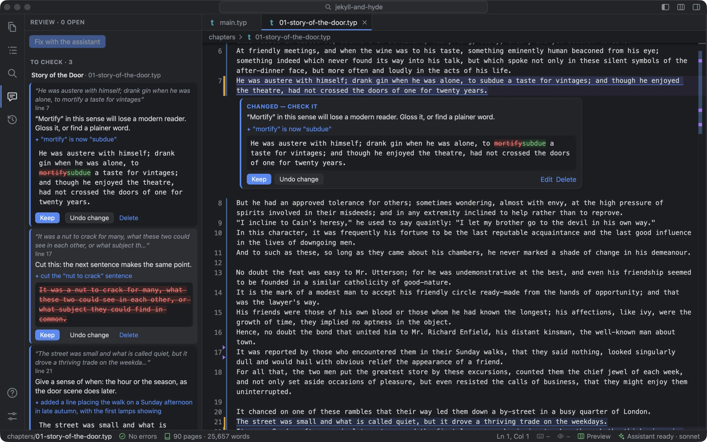
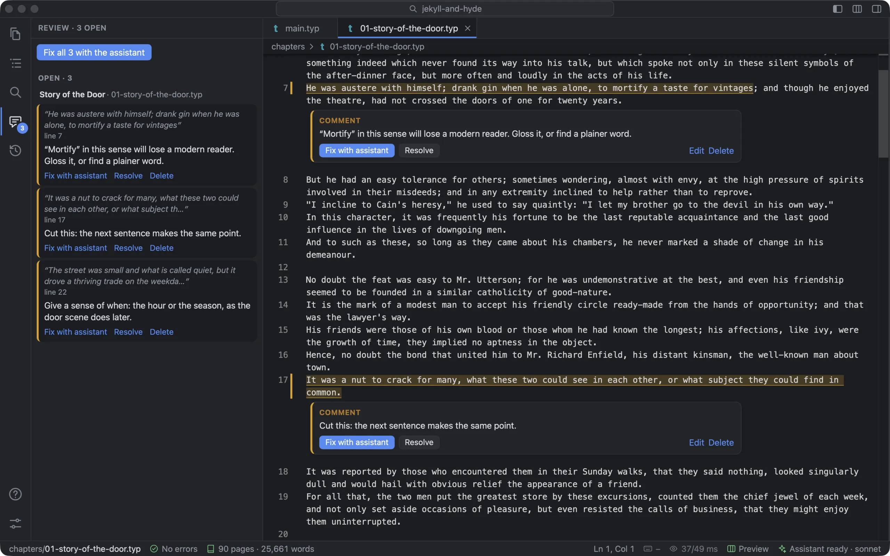

Leaving a comment
- Select the passage, in your text or on the typeset pages.
- Click the Comment bubble that appears beside it, or press ⌥⌘M.
- Type what should change, and press ⏎.
The passage is highlighted and the comment sits under it, where you’ll see it when you come back to that page. A comment can hold maths (“Give the exact value, $1/sqrt(3)$, then the decimal”), and shows it as maths. There’s no separate review mode to switch into: you keep writing around your comments, and when you fix one yourself, press Resolve.

Fix all
The Review view lists every open comment, chapter by chapter, with a button at the top: Fix all 3 with the assistant (or type /fix in the message box). The assistant gets every comment, with the passage it’s on, and this instruction:
For each one, make the change it asks for in that passage, in the book’s voice and style guide, and change nothing else. If a comment can’t or shouldn’t be done, leave the text and say why.
When it’s finished, each comment shows what happened to it: changed, or declined and why. A note in the chat sums it up: “Review: 2 changed (check them in the editor or the Review tab: keep or undo); 1 declined (the reason is on the comment).”
Checking each change
A comment the assistant acted on moves to To check, and its card says Changed — check it, with the assistant’s note and the change to the passage, word by word.
- Keep resolves the comment.
- Undo change puts the passage back as it was and opens the comment again. If you’ve edited the passage since, it won’t guess: it tells you, and History has the earlier text.
- A comment it declined stays open, with its reason: “✦ Declined: the next sentence depends on it.” You can argue back, or fix it yourself.
This is the part that matters. You never have to take the assistant’s word that a comment was dealt with. Each one has its own change to read, and its own undo, so you can keep five changes and throw out the sixth.
Comments stay beside the text
Comments are kept in the book’s folder but never in your chapters, so neither your text nor the printed book carries them, and they go wherever the book goes. Each one follows its passage as you edit around it, and a comment on one “however” never jumps to another.
- Add a comment
- ⌥⌘M, the Comment bubble, or right-click ▸ Add Comment…
- See them all
- The Review view (the speech bubble down the left of the window)
- Fix them
- Fix all, Fix with assistant on one comment, Assistant ▸ Fix Review Comments, or
/fix
What it doesn’t do
- The assistant’s change goes into your text when it makes it, and you check it afterwards. It isn’t held back as a suggestion for you to accept.
- Rewrite the words a comment is on and it loses its place: it shows “text changed” in the list, and leaves the page.
- A comment shows the change made at its passage. If the assistant changed something elsewhere for it, History shows that.
- Comments don’t have replies yet.